Publications
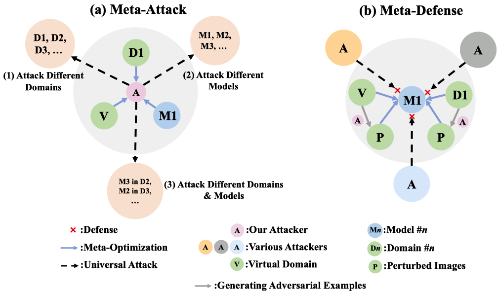
Towards Robust Person
Re-Identification by Defending Against Universal Attackers
Fengxiang Yang, Juanjuan Weng, Zhun Zhong, Hong Liu, Zheng Wang, Zhiming Luo, Donglin Cao, Shaozi Li, Shin'ichi Satoh, Nicu Sebe
IEEE Transactions on Pattern Analysis and Machine Intelligence (TPAMI), 2022
bibtex / pdf / Code
Fengxiang Yang, Juanjuan Weng, Zhun Zhong, Hong Liu, Zheng Wang, Zhiming Luo, Donglin Cao, Shaozi Li, Shin'ichi Satoh, Nicu Sebe
IEEE Transactions on Pattern Analysis and Machine Intelligence (TPAMI), 2022
bibtex / pdf / Code
@ARTICLE{metaAD,
author={Yang, Fengxiang and Weng, Juanjuan and Zhong, Zhun and Liu, Hong and Wang, Zheng and Luo, Zhiming and Cao, Donglin and Li, Shaozi and Satoh, Shin'ichi and Sebe, Nicu},
journal={IEEE Transactions on Pattern Analysis and Machine Intelligence},
title={Towards Robust Person Re-Identification by Defending Against Universal Attackers},
year={2022},
volume={},
number={},
pages={1-17},
doi={10.1109/TPAMI.2022.3199013}}
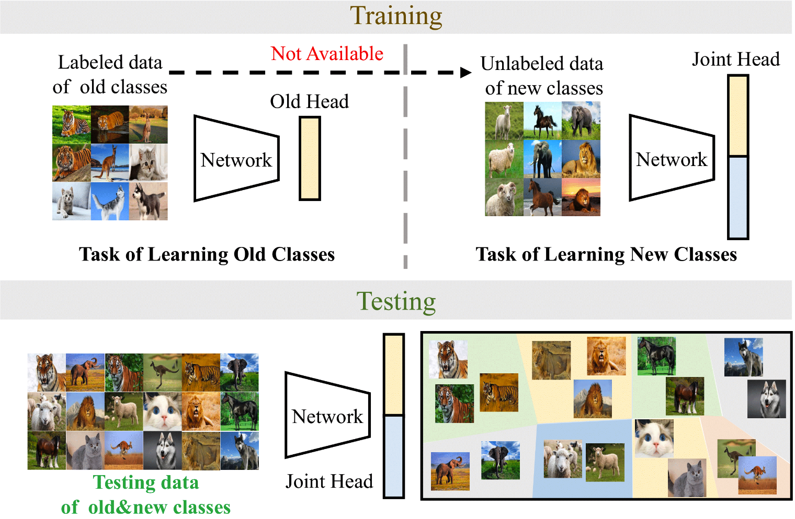
Class-incremental Novel Class
Discovery
Subhankar Roy, Mingxuan Liu, Zhun Zhong, Nicu Sebe, Elisa Ricci
European Conference on Computer Vision (ECCV), 2022
bibtex / pdf / Code
Subhankar Roy, Mingxuan Liu, Zhun Zhong, Nicu Sebe, Elisa Ricci
European Conference on Computer Vision (ECCV), 2022
bibtex / pdf / Code
@inproceedings{incd2022,
title={Class-incremental Novel Class Discovery},
author={Roy, Subhankar and Liu, Mingxuan and Zhong, Zhun and Sebe, Nicu and Ricci, Elisa},
booktitle={ECCV},
year={2022}}
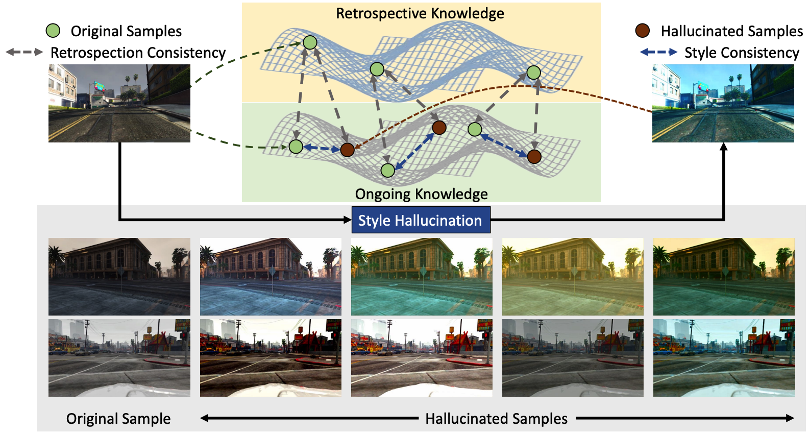
Style-Hallucinated Dual
Consistency Learning for Domain Generalized Semantic Segmentation
Yuyang Zhao, Zhun Zhong, Na Zhao, Nicu Sebe, Gim Hee Lee
European Conference on Computer Vision (ECCV), 2022
bibtex / pdf / code /
Yuyang Zhao, Zhun Zhong, Na Zhao, Nicu Sebe, Gim Hee Lee
European Conference on Computer Vision (ECCV), 2022
bibtex / pdf / code /
@inproceedings{zhao2022shdc,
title={Style-Hallucinated Dual Consistency Learning for Domain Generalized Semantic Segmentation},
author={Zhao, Yuyang and Zhong, Zhun and Zhao, Na and Sebe, Nicu and Lee, Gim Hee},
booktitle={ECCV},
year={2022}
}
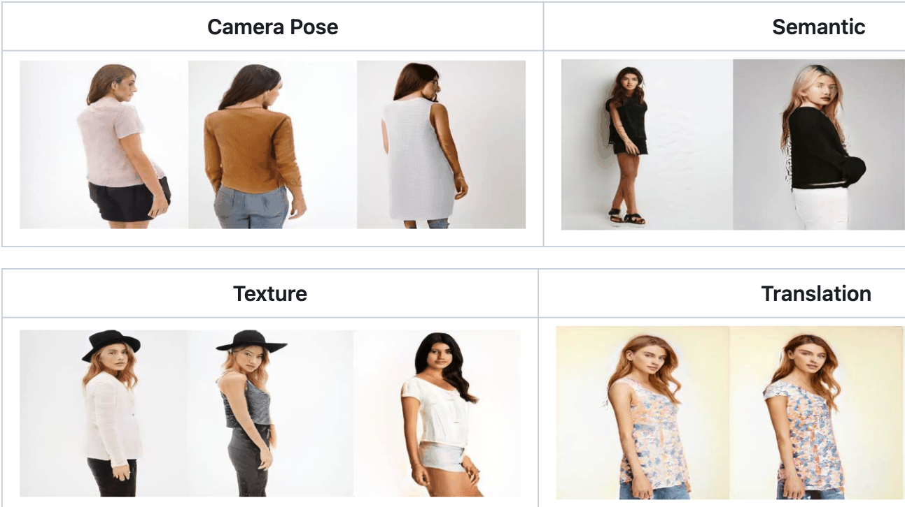
3D-Aware Semantic-Guided
Generative Model for Human Synthesis
Jichao Zhang, Enver Sangineto, Hao Tang, Aliaksandr Siarohin, Zhun Zhong, Nicu Sebe, Wei Wang
European Conference on Computer Vision (ECCV), 2022
bibtex / pdf / Code
Jichao Zhang, Enver Sangineto, Hao Tang, Aliaksandr Siarohin, Zhun Zhong, Nicu Sebe, Wei Wang
European Conference on Computer Vision (ECCV), 2022
bibtex / pdf / Code
@inproceedings{zhang20213d,
title={3D-Aware Semantic-Guided Generative Model for Human Synthesis},
author={Zhang, Jichao and Sangineto, Enver and Tang, Hao and Siarohin, Aliaksandr and Zhong, Zhun and Sebe, Nicu and Wang, Wei},
booktitle={ECCV},
year={2022}
}
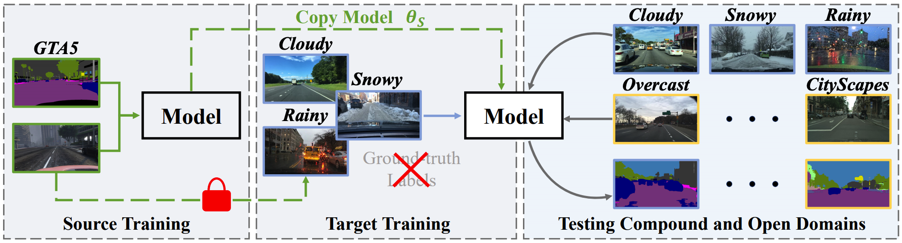
Source-Free Open Compound Domain
Adaptation in Semantic Segmentation
Yuyang Zhao, Zhun Zhong, Zhiming Luo, Gim Hee Lee, Nicu Sebe
IEEE Transactions on Circuits and Systems for Video Technology (TCSVT), 2022
bibtex / pdf /
Yuyang Zhao, Zhun Zhong, Zhiming Luo, Gim Hee Lee, Nicu Sebe
IEEE Transactions on Circuits and Systems for Video Technology (TCSVT), 2022
bibtex / pdf /
@article{zhao2021source,
title={Source-Free Open Compound Domain Adaptation in Semantic Segmentation},
author={Zhao, Yuyang and Zhong, Zhun and Luo, Zhiming and Lee, Gim Hee and Sebe, Nicu},
journal={IEEE Transactions on Circuits and Systems for Video Technology},
year={2022}
}
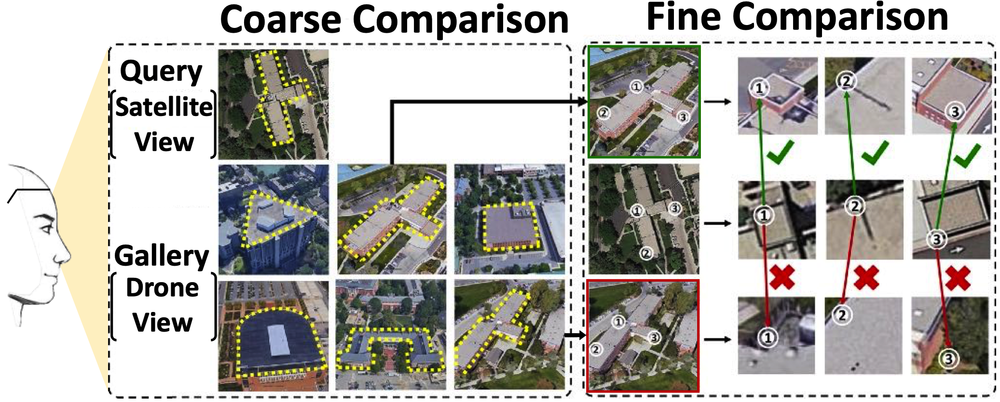
Joint Representation Learning and Keypoint
Detection for Cross-view Geo-localization
Jinliang Lin, Zhedong Zheng, Zhun Zhong, Zhiming Luo, Shaozi Li, Yi Yang, Nicu Sebe
IEEE Transactions on Image Processing (TIP), 2022
bibtex / pdf / Code
Jinliang Lin, Zhedong Zheng, Zhun Zhong, Zhiming Luo, Shaozi Li, Yi Yang, Nicu Sebe
IEEE Transactions on Image Processing (TIP), 2022
bibtex / pdf / Code
@article{lin2022,
title={Joint Representation Learning and Keypoint Detection for Cross-view Geo-localization},
author={Lin, Jinliang and Zheng, Zhedong and Zhong, Zhun and Luo, Zhiming and Li, Shaozi and Yang, Yi and Sebe, Nicu},
journal={IEEE Transactions on Image Processing (TIP)},
year={2022},
}
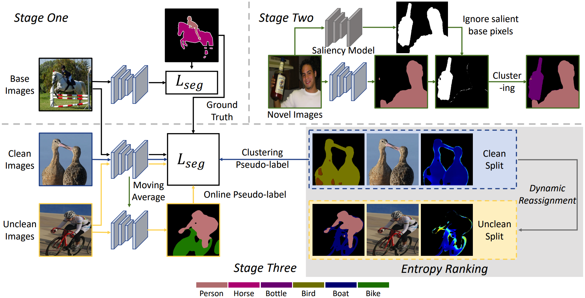
Novel Class Discovery in
Semantic Segmentation
Yuyang Zhao, Zhun Zhong, Nicu Sebe, Gim Hee Lee
IEEE Conference on Computer Vision and Pattern Recognition (CVPR), 2022
bibtex / pdf / Project Page / Code
Yuyang Zhao, Zhun Zhong, Nicu Sebe, Gim Hee Lee
IEEE Conference on Computer Vision and Pattern Recognition (CVPR), 2022
bibtex / pdf / Project Page / Code
@inproceedings{zhao2022ncdss,
title={Novel Class Discovery in Semantic Segmentation},
author={Zhao, Yuyang and Zhong, Zhun and Sebe, Nicu and Lee, Gim Hee},
booktitle={Proceedings of IEEE Conference on Computer Vision and Pattern Recognition (CVPR)},
year={2022}}
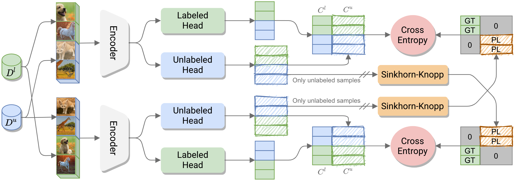
A Unified Objective for Novel Class
Discovery
Enrico Fini, Enver Sangineto, Stéphane Lathuilière, Zhun Zhong, Moin Nabi, Elisa Ricci
IEEE International Conference on Computer Vision (ICCV), Oral, 2021
bibtex / pdf / Project Page / Code
Enrico Fini, Enver Sangineto, Stéphane Lathuilière, Zhun Zhong, Moin Nabi, Elisa Ricci
IEEE International Conference on Computer Vision (ICCV), Oral, 2021
bibtex / pdf / Project Page / Code
@InProceedings{Fini_2021_ICCV,
author = {Fini, Enrico and Sangineto, Enver and Lathuilière, Stéphane and Zhong, Zhun and Nabi, Moin and Ricci, Elisa},
title = {A Unified Objective for Novel Class Discovery},
booktitle = {Proceedings of the IEEE/CVF International Conference on Computer Vision (ICCV)},
year = {2021}
}

Neighborhood Contrastive Learning for Novel Class
Discovery
Zhun Zhong, Enrico Fini, Subhankar Roy, Zhiming Luo, Elisa Ricci, Nicu Sebe
IEEE Conference on Computer Vision and Pattern Recognition (CVPR), 2021
bibtex / pdf / Project Page /
Zhun Zhong, Enrico Fini, Subhankar Roy, Zhiming Luo, Elisa Ricci, Nicu Sebe
IEEE Conference on Computer Vision and Pattern Recognition (CVPR), 2021
bibtex / pdf / Project Page /
@InProceedings{Zhong_2021_CVPR,
author = {Zhong, Zhun and Fini, Enrico and Roy, Subhankar and Luo, Zhiming and Ricci, Elisa and Sebe, Nicu},
title = {Neighborhood Contrastive Learning for Novel Class Discovery},
booktitle = {Proceedings of the IEEE/CVF Conference on Computer Vision and Pattern Recognition (CVPR)},
month = {June},
year = {2021},
pages = {10867-10875}
}

OpenMix: Reviving Known Knowledge
for Discovering Novel Visual Categories in An Open World
Zhun Zhong, Linchao Zhu, Zhiming Luo, Shaozi Li, Yi Yang, Nicu Sebe
IEEE Conference on Computer Vision and Pattern Recognition (CVPR), 2021
bibtex / pdf / Project Page /
Zhun Zhong, Linchao Zhu, Zhiming Luo, Shaozi Li, Yi Yang, Nicu Sebe
IEEE Conference on Computer Vision and Pattern Recognition (CVPR), 2021
bibtex / pdf / Project Page /
@inproceedings{zhong2021openmix,
title={OpenMix: Reviving Known Knowledge for Discovering Novel Visual Categories in An Open World},
author={Zhong, Zhun and Zhu, Linchao and Luo, Zhiming and Li, Shaozi and Yang, Yi and Sebe, Nicu},
booktitle={Proceedings of IEEE Conference on Computer Vision and Pattern Recognition (CVPR)},
year={2021}
}
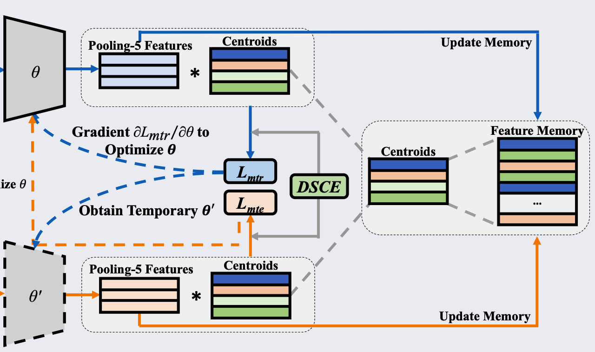
Joint Noise-Tolerant Learning
and
Meta Camera Shift Adaptation for Unsupervised Person Re-Identification
Fengxiang Yang, Zhun Zhong, Zhiming Luo, Yuanzheng Cai, Shaozi Li, Nicu Sebe
IEEE Conference on Computer Vision and Pattern Recognition (CVPR), 2021
bibtex / pdf / code
Fengxiang Yang, Zhun Zhong, Zhiming Luo, Yuanzheng Cai, Shaozi Li, Nicu Sebe
IEEE Conference on Computer Vision and Pattern Recognition (CVPR), 2021
bibtex / pdf / code
@inproceedings{Yang2021MetaCam,
title={Joint Noise-Tolerant Learning and Meta Camera Shift Adaptation for Unsupervised Person Re-Identification},
author={Yang, Fengxiang and Zhong, Zhun and Luo, Zhiming and Yuanzheng, Cai and Li, Shaozi and Sebe, Nicu},
booktitle={Proceedings of IEEE Conference on Computer Vision and Pattern Recognition (CVPR)},
year={2021}
}
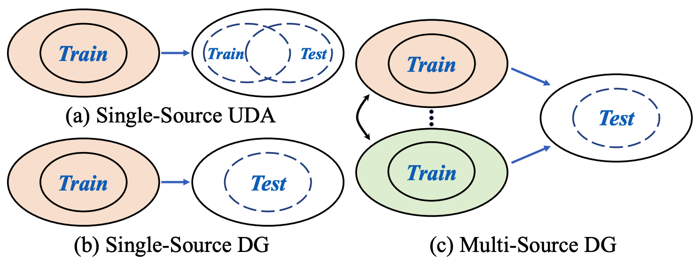
Learning to Generalize Unseen
Domains
via Memory-based Multi-Source Meta-Learning for Person Re-Identification
Yuyang Zhao, Zhun Zhong, Fengxiang Yang, Zhiming Luo, Shaozi Li, Nicu Sebe
IEEE Conference on Computer Vision and Pattern Recognition (CVPR), 2021
bibtex / pdf / code /
Yuyang Zhao, Zhun Zhong, Fengxiang Yang, Zhiming Luo, Shaozi Li, Nicu Sebe
IEEE Conference on Computer Vision and Pattern Recognition (CVPR), 2021
bibtex / pdf / code /
@inproceedings{Zhao2021M3L,
title={Learning to Generalize Unseen Domains via Memory-based Multi-Source Meta-Learning for Person Re-Identification},
author={Zhao, Yuyang and Zhong, Zhun and Yang, Fengxiang and Luo, Zhiming and Li, Shaozi and Sebe, Nicu},
booktitle={Proceedings of IEEE Conference on Computer Vision and Pattern Recognition (CVPR)},
year={2021}
}
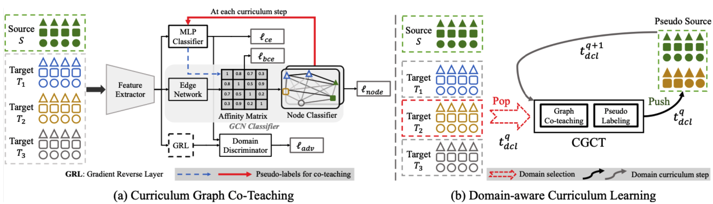
Curriculum Graph Co-Teaching for Multi-Target Domain
Adaptation
Subhankar Roy, Evgeny Krivosheev, Zhun Zhong, Elisa Ricci, Nicu Sebe
IEEE Conference on Computer Vision and Pattern Recognition (CVPR), 2021
bibtex / pdf / Project Page / Code /
Subhankar Roy, Evgeny Krivosheev, Zhun Zhong, Elisa Ricci, Nicu Sebe
IEEE Conference on Computer Vision and Pattern Recognition (CVPR), 2021
bibtex / pdf / Project Page / Code /
@inproceedings{Roy2021CGCT,
title={Curriculum Graph Co-Teaching for Multi-Target Domain Adaptation},
author={Roy, Subhankar and Krivosheev, Evgeny and Zhong, Zhun and Ricci, Elisa and Sebe, Nicu},
booktitle={Proceedings of IEEE Conference on Computer Vision and Pattern Recognition (CVPR)},
year={2021}
}
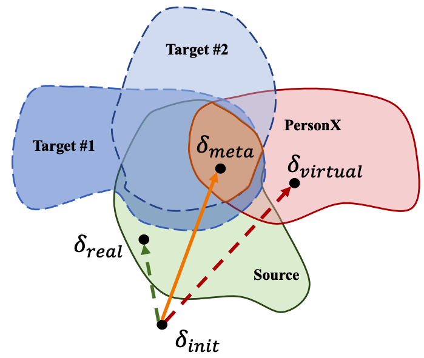
Learning to
Attack Real-World Models for Person Re-identification via Virtual-Guided MetaLearning
Fengxiang Yang, Zhun Zhong, Hong Liu, Zheng Wang, Zhiming Luo, Shaozi Li, Nicu Sebe, Shin’ichi Satoh
AAAI, 2021
bibtex / pdf / code /
Fengxiang Yang, Zhun Zhong, Hong Liu, Zheng Wang, Zhiming Luo, Shaozi Li, Nicu Sebe, Shin’ichi Satoh
AAAI, 2021
bibtex / pdf / code /
@inproceedings{Yang2021MetaAttack,
title={Learning to Attack Real-World Models for Person Re-identification via Virtual-Guided MetaLearning},
author={Yang, Fengxiang and Zhong, Zhun and Liu, Hong and Wang, Zheng and Luo, Zhiming and Li, Shaozi and Sebe, Nicu and Satoh, Shin’ichi},
booktitle={AAAI},
year={2021}
}
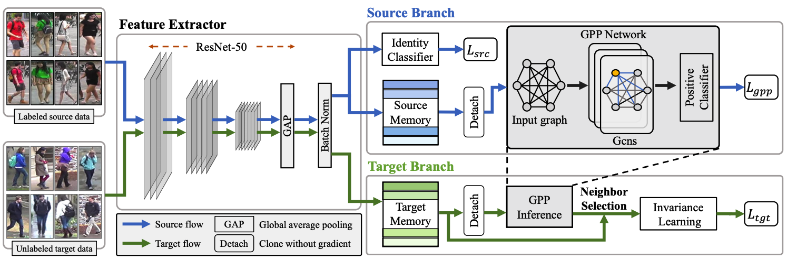
Learning to
Adapt
Invariance in Memory for Person Re-identification
Zhun Zhong, Liang Zheng, Zhiming Luo, Shaozi Li, Yi Yang
IEEE Transactions on Pattern Analysis and Machine Intelligence (TPAMI), 2020
bibtex / pdf / Code
Zhun Zhong, Liang Zheng, Zhiming Luo, Shaozi Li, Yi Yang
IEEE Transactions on Pattern Analysis and Machine Intelligence (TPAMI), 2020
bibtex / pdf / Code
@article{zhong2020memory,
title={Learning to Adapt Invariance in Memory for Person Re-identification},
author={Zhong, Zhun and Zheng, Liang and Luo, Zhiming and Li, Shaozi and Yang, Yi},
journal={IEEE Transactions on Pattern Analysis and Machine Intelligence (TPAMI)},
year={2021},
volume={43},
number={8},
pages={2723-2738},
doi={10.1109/TPAMI.2020.2976933},
ISSN={1939-3539},
month={Aug}
}
Random Erasing Data
Augmentation
Zhun Zhong, Liang Zheng, Guoliang Kang, Shaozi Li, Yi Yang
AAAI, Oral, 2020
abstract / bibtex / PDF / Torchvision / CIFAR / ImageNet / Re-ID (1000+ Citations)
PaperDigest Most Influential AAAI Papers (1st-Place)
Zhun Zhong, Liang Zheng, Guoliang Kang, Shaozi Li, Yi Yang
AAAI, Oral, 2020
abstract / bibtex / PDF / Torchvision / CIFAR / ImageNet / Re-ID (1000+ Citations)
PaperDigest Most Influential AAAI Papers (1st-Place)
@inproceedings{zhong2020erasing,
title={Random Erasing Data Augmentation},
author={Zhong, Zhun and Zheng, Liang and Kang, Guoliang and Li, Shaozi and Yang, Yi},
booktitle={AAAI},
year={2020}
}
In this paper, we introduce Random Erasing, a new data augmentation method for training the convolutional neural network (CNN). In training, Random Erasing randomly selects a rectangle region in an image and erases its pixels with random values. In this process, training images with various levels of occlusion are generated, which reduces the risk of over-fitting and makes the model robust to occlusion. Random Erasing is parameter learning free, easy to implement, and can be integrated with most of the CNN-based recognition models. Albeit simple, Random Erasing is complementary to commonly used data augmentation techniques such as random cropping and flipping, and yields consistent improvement over strong baselines in image classification, object detection and person re-identification.
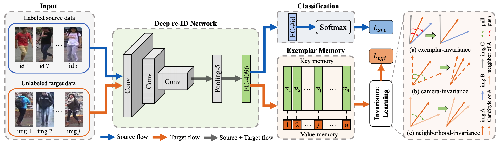
Invariance Matters: Exemplar Memory
for
Domain Adaptive Person Re-identification
Zhun Zhong, Liang Zheng, Zhiming Luo, Shaozi Li, Yi Yang
IEEE Conference on Computer Vision and Pattern Recognition (CVPR), 2019
bibtex / pdf / Code
Zhun Zhong, Liang Zheng, Zhiming Luo, Shaozi Li, Yi Yang
IEEE Conference on Computer Vision and Pattern Recognition (CVPR), 2019
bibtex / pdf / Code
@inproceedings{zhong2019invariance,
title={Invariance Matters: Exemplar Memory for Domain Adaptive Person Re-identification},
author={Zhong, Zhun and Zheng, Liang and Luo, Zhiming and Li, Shaozi and Yang, Yi},
booktitle={Proceedings of IEEE Conference on Computer Vision and Pattern Recognition (CVPR)},
year={2019}
}
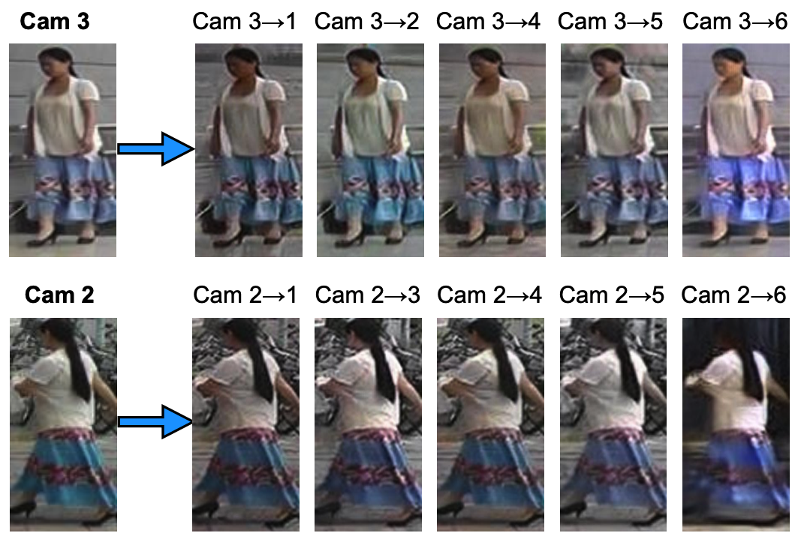
CamStyle: A Novel Data
Augmentation Method for Person Re-identification
Zhun Zhong, Liang Zheng, Zhedong Zheng, Shaozi Li, Yi Yang
IEEE Transactions on Image Processing (TIP), 2019
bibtex / pdf / Code
Zhun Zhong, Liang Zheng, Zhedong Zheng, Shaozi Li, Yi Yang
IEEE Transactions on Image Processing (TIP), 2019
bibtex / pdf / Code
@article{zhong2019camstyle,
title={CamStyle: A Novel Data Augmentation Method for Person Re-identification},
author={Zhong, Zhun and Zheng, Liang and Zheng, Zhedong and Li, Shaozi and Yang, Yi},
journal={IEEE Transactions on Image Processing},
volume={28},
number={3},
pages={1176--1190},
publisher={IEEE},
year={2019}
}
Generalizing A Person Retrieval Model Hetero- and Homogeneously
Zhun Zhong, Liang Zheng, Shaozi Li, Yi Yang
European Conference on Computer Vision (ECCV), 2018
abstract / bibtex / PDF/ Code
Zhun Zhong, Liang Zheng, Shaozi Li, Yi Yang
European Conference on Computer Vision (ECCV), 2018
abstract / bibtex / PDF/ Code
@inproceedings{zhong2018generalizing,
title={Generalizing A Person Retrieval Model Hetero-and Homogeneously},
author={Zhong, Zhun and Zheng, Liang and Li, Shaozi and Yang, Yi},
booktitle={Proceedings of the European Conference on Computer Vision (ECCV)},
pages={172--188},
year={2018}
}
Person re-identification (re-ID) poses unique challenges for unsupervised domain adaptation (UDA) in that classes in the source and target sets (domains) are entirely different and that image variations are largely caused by cameras. Given a labeled source training set and an unlabeled target training set, we aim to improve the generalization ability of re-ID models on the target testing set. To this end, we introduce a Hetero-Homogeneous Learning (HHL) method. Our method enforces two properties simultaneously: 1) camera invariance, learned via positive pairs formed by unlabeled target images and their camera style transferred counterparts; 2) domain connectedness, by regarding source / target images as negative matching pairs to the target / source images. The first property is implemented by homogeneous learning because training pairs are collected from the same domain. The second property is achieved by heterogeneous learning because we sample training pairs from both the source and target domains. On Market-1501, DukeMTMC-reID and CUHK03, we show that the two properties contribute indispensably and that very competitive re-ID UDA accuracy is achieved.
Camera Style Adaptation for Person Re-identification
Zhun Zhong, Liang Zheng, Zhedong Zheng, Shaozi Li, Yi Yang
IEEE Conference on Computer Vision and Pattern Recognition (CVPR), 2018
abstract / bibtex / PDF/ Code
Zhun Zhong, Liang Zheng, Zhedong Zheng, Shaozi Li, Yi Yang
IEEE Conference on Computer Vision and Pattern Recognition (CVPR), 2018
abstract / bibtex / PDF/ Code
@inproceedings{zhong2018camera,
title={Camera style adaptation for person re-identification},
author={Zhong, Zhun and Zheng, Liang and Zheng, Zhedong and Li, Shaozi and Yang, Yi},
booktitle={Proceedings of the IEEE Conference on Computer Vision and Pattern Recognition},
pages={5157--5166},
year={2018}
}
Being a cross-camera retrieval task, person re-identification suffers from image style variations caused by different cameras. The art implicitly addresses this problem by learning a camera-invariant descriptor subspace. In this paper, we explicitly consider this challenge by introducing camera style (CamStyle) adaptation. CamStyle can serve as a data augmentation approach that smooths the camera style disparities. Specifically, with CycleGAN, labeled training images can be style-transferred to each camera, and, along with the original training samples, form the augmented training set. This method, while increasing data diversity against over-fitting, also incurs a considerable level of noise. In the effort to alleviate the impact of noise, the label smooth regularization (LSR) is adopted. The vanilla version of our method (without LSR) performs reasonably well on few-camera systems in which over-fitting often occurs. With LSR, we demonstrate consistent improvement in all systems regardless of the extent of over-fitting. We also report competitive accuracy compared with the state of the art.
Re-ranking Person Re-identification with k-reciprocal Encoding
Zhun Zhong, Liang Zheng, Donglin Cao,Shaozi Li
IEEE Conference on Computer Vision and Pattern Recognition (CVPR), 2017
abstract / bibtex / PDF/ Code and CUHK03 new training/testing protocol
Zhun Zhong, Liang Zheng, Donglin Cao,Shaozi Li
IEEE Conference on Computer Vision and Pattern Recognition (CVPR), 2017
abstract / bibtex / PDF/ Code and CUHK03 new training/testing protocol
@inproceedings{zhong2017re,
title={Re-ranking person re-identification with k-reciprocal encoding},
author={Zhong, Zhun and Zheng, Liang and Cao, Donglin and Li, Shaozi},
booktitle={Computer Vision and Pattern Recognition (CVPR), 2017 IEEE Conference on},
pages={3652--3661},
year={2017},
organization={IEEE}
}
When considering person re-identification (re-ID) as a retrieval process, re-ranking is a critical step to improve its accuracy. Yet in the re-ID community, limited effort has been devoted to re-ranking, especially those fully automatic, unsupervised solutions. In this paper, we propose a k-reciprocal encoding method to re-rank the re-ID results. Our hypothesis is that if a gallery image is similar to the probe in the k-reciprocal nearest neighbors, it is more likely to be a true match. Specifically, given an image, a k-reciprocal feature is calculated by encoding its k-reciprocal nearest neighbors into a single vector, which is used for re-ranking under the Jaccard distance. The final distance is computed as the combination of the original distance and the Jaccard distance. Our re-ranking method does not require any human interaction or any labeled data, so it is applicable to large-scale datasets. Experiments on the large-scale Market-1501, CUHK03, MARS, and PRW datasets confirm the effectiveness of our method.

Class-Specific
Object Proposals Re-ranking for Object Detection in Automatic Driving
Zhun Zhong, Mingyi Lei, Donglin Cao, Jianping Fan, Shaozi Li
Neurocomputing, 2017
abstract / bibtex / PDF
Zhun Zhong, Mingyi Lei, Donglin Cao, Jianping Fan, Shaozi Li
Neurocomputing, 2017
abstract / bibtex / PDF
@article{zhong2017class,
title={Class-specific object proposals re-ranking for object detection in automatic driving},
author={Zhong, Zhun and Lei, Mingyi and Cao, Donglin and Fan, Jianping and Li, Shaozi},
journal={Neurocomputing},
volume={242},
pages={187--194},
year={2017},
publisher={Elsevier}
}
Object detection often suffers from a plenty of bootless proposals, selecting high quality proposals
remains a great challenge. In this paper, we propose a semantic, class-specific approach to re-rank
object proposals, which can consistently improve the recall performance even with less proposals.
We first extract features for each proposal including semantic segmentation, stereo information,
contextual information, CNN-based objectness and low-level cue, and then score them using classspecific
weights learnt by Structured SVM. The advantages of the proposed model are two-fold: 1)
it can be easily merged to existing generators with few computational costs, and 2) it can achieve
high recall rate uner strict critical even using less proposals. Experimental evaluation on the KITTI
benchmark demonstrates that our approach significantly improves existing popular generators on
recall performance. Moreover, in the experiment conducted for object detection, even with 1,500
proposals, our approach can still have higher average precision (AP) than baselines with 5,000
proposals.
Detecting
Ground Control Points via Convolutional Neural Network for Stereo Matching
Zhun Zhong, Songzhi Su, Donglin Cao, Shaozi Li, Zhihan Lv
Multimedia Tools and Applications (MTA), 2016
abstract / bibtex / PDF
Zhun Zhong, Songzhi Su, Donglin Cao, Shaozi Li, Zhihan Lv
Multimedia Tools and Applications (MTA), 2016
abstract / bibtex / PDF
@article{zhong2017detecting,
title={Detecting ground control points via convolutional neural network for stereo matching},
author={Zhong, Zhun and Su, Songzhi and Cao, Donglin and Li, Shaozi and Lv, Zhihan},
journal={Multimedia Tools and Applications},
volume={76},
number={18},
pages={18473--18488},
year={2017},
publisher={Springer}
}
In this paper, we present a novel approach to detect ground control points (GCPs) for stereo matching problem. First of all, we train a convolutional neural network (CNN) on a large stereo set, and compute the matching confidence of each pixel by using the trained CNN model. Secondly, we present a ground control points selection scheme according to the maximum matching confidence of each pixel. Finally, the selected GCPs are used to refine the matching costs, then we apply the new matching costs to perform optimization with semi-global matching algorithm for improving the final disparity maps. We evaluate our approach on the KITTI 2012 stereo benchmark dataset. Our experiments show that the proposed approach significantly improves the accuracy of disparity maps.
Unsupervised domain adaption
dictionary learning for visual recognition
Zhun Zhong, Zongming Li, Runlin Li, Xiaoxia Sun
ICIP, 2015
abstract / bibtex / axXiv
Zhun Zhong, Zongming Li, Runlin Li, Xiaoxia Sun
ICIP, 2015
abstract / bibtex / axXiv
@article{zhong2015unsupervised,
title={Unsupervised domain adaption dictionary learning for visual recognition},
author={Zhong, Zhun and Li, Zongmin and Li, Runlin and Sun, Xiaoxia},
journal={arXiv preprint arXiv:1506.01125},
year={2015}
}
Over the last years, dictionary learning method has been extensively applied to deal with various computer vision recognition applications, and produced state-of-the-art results. However, when the data instances of a target domain have a different distribution than that of a source domain, the dictionary learning method may fail to perform well. In this paper, we address the cross-domain visual recognition problem and propose a simple but effective unsupervised domain adaption approach, where labeled data are only from source domain. In order to bring the original data in source and target domain into the same distribution, the proposed method forcing nearest coupled data between source and target domain to have identical sparse representations while jointly learning dictionaries for each domain, where the learned dictionaries can reconstruct original data in source and target domain respectively. So that sparse representations of original data can be used to perform visual recognition tasks. We demonstrate the effectiveness of our approach on standard datasets. Our method performs on par or better than competitive state-of-the-art methods.